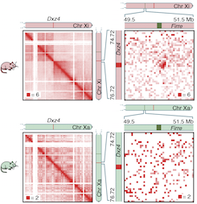
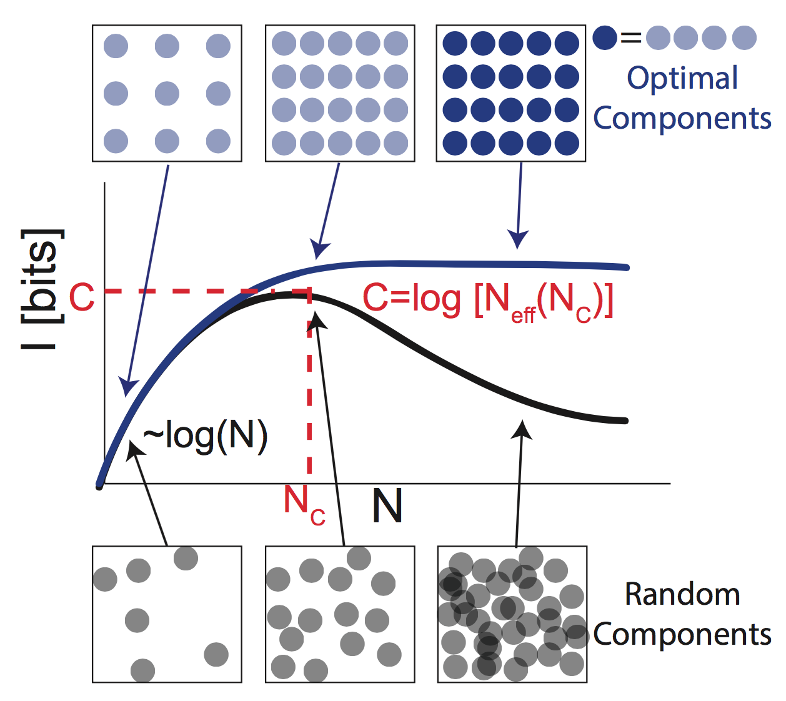

Miriam Huntley
A list of my publications can be found on my Google Scholar page.
The 3D Genome at High Resolution
The three-dimensional structure of the human genome is of great biological importance, but it still is not fully solved. I worked closely with other members of the Aiden group to study the 3D genome, using Hi-C, a next-generation sequencing experiment. We generated and analyzed the largest and highest-resolution Hi-C dataset (to date). The observation of novel high-resolution features in the data led us to develop new scalable analysis techniques. You can find our work in our Cell 2014 paper and in followup work. With Suhas Rao, Erez Lieberman Aiden, and the Aiden Lab.

The 3D Structure of the Inactive X Chromosome
In human females, one of the two X chromosomes is inactive and adopts an unusual 3D conformation. In this work, we used Hi-C to map this 3D structure in humans, mice, and rhesus macaque. We discovered that a particular element on the inactive X chromosome, DXZ4, is crucial for certain higher-order genomic architecture features. You can find our work in our PNAS 2016 paper. With Emily Darrow, Brian Chadwick, Erez Lieberman Aiden, the Chadwick Lab, and the Aiden Lab.

Random Matrix Theory and PCA
I am interested in using tools from random matrix theory to understand the limits of data analysis methods. In particular, random matrix theory (RMT) can be used to study the effectiveness of Principal Component Analysis (PCA), a widely used procedure for uncovering relationships between variables in large datasets. My work has focused on extending RMT tools to describe PCA when applied in slightly altered settings. For example, in many biological analyses, it has become commonplace for `pragmatic' adjustments to PCA to be carried out, wherein the data matrix is transformed by a linear transformation that is chosen to incorporate prior knowledge about the structure of the data. The validity of these adjustments is largely determined ex post facto, with the quality of the results used to justify the validity of the procedure. We developed an RMT based analysis to study these types of transformations, and showed when linear transformations of the data that incorporate prior information improve the signal detectability. Work currently under review. With Michael Brenner and Lucy Colwell.

Self-Assembly
Biology is regularly able to build structures from the bottom-up, and while synthetic experiments have made rapid progress in this space, they are still far behind evolution's innovations. I worked on building theory tools for understanding the limits of self-assembly. Self-assembly (in both biological and synthetic contexts) is typically achieved by engineering binding specificities between the different types of particles, or `species': each species must bind specifically to its target partner, and avoid binding with other off-target binding partners. Complex structures can be built up using these engineered specificities between species, but off-target interactions severely limit the number of species that can be used effectively. In this project I studied what sets the limit for the number of interacting species a system can handle before the crosstalk overwhelms the interactions. Inspired by Shannon's Noisy Channel Coding Theorem, we reframed these systems in terms of information theory and treat desirable interactions between complementary on-target binding partners as the `messages', and off-target binding events as `errors', and derived a `capacity' for these systems: the maximal amount of mutual information that is encodable using engineered binding specificities. You can read more in our our PNAS 2016 paper. With Arvind Murugan and Michael Brenner.